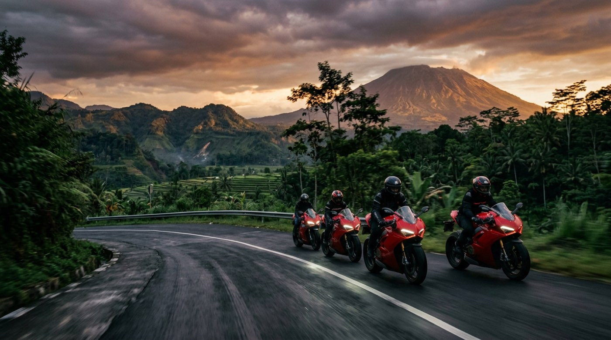

Live tracking aktif · Touring Jakarta–Bandung sedang berlangsung
Satu Keluarga di Atas Roda Dua
Komunitas Ducati Indonesia — daftar member dalam 15 menit, bayar otomatis, ikut touring & track day, dan saling menjaga lewat live tracking.
1.250+Member
8Chapter
64+Kegiatan / Tahun
480.000+Kilometer Touring
Kalender
Semua Kegiatan
Kegiatan Terdekat
Touring, riding, track day, dan bakti sosial. Pilih kegiatan, daftar, dan bayar langsung dari HP.
Platform Digital DOCI
Semua Urusan Klub, Satu Tempat
Dirancang mobile-first agar mudah dipakai saat di rumah maupun di jalan.
Kabar DOCI
Baca SemuaBerita Terbaru
Dokumentasi
Lihat GaleriGaleri Terbaru
Momen dari jalan, sirkuit, dan kegiatan sosial — diunggah oleh member DOCI.